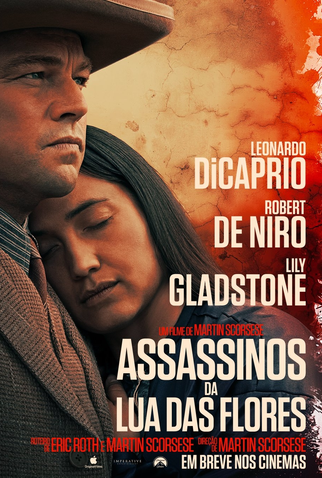
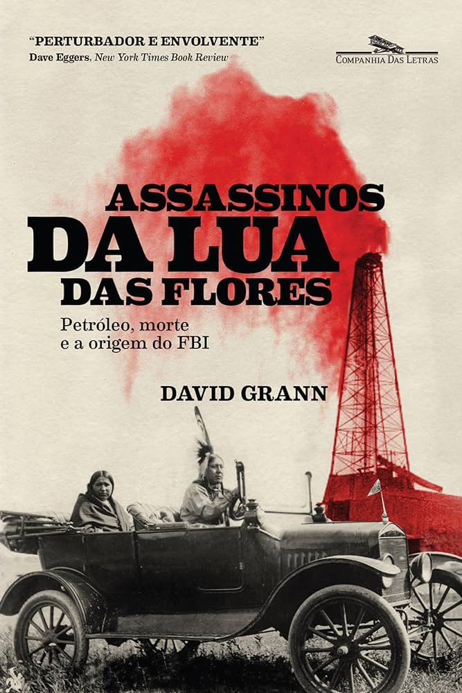
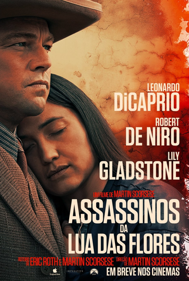
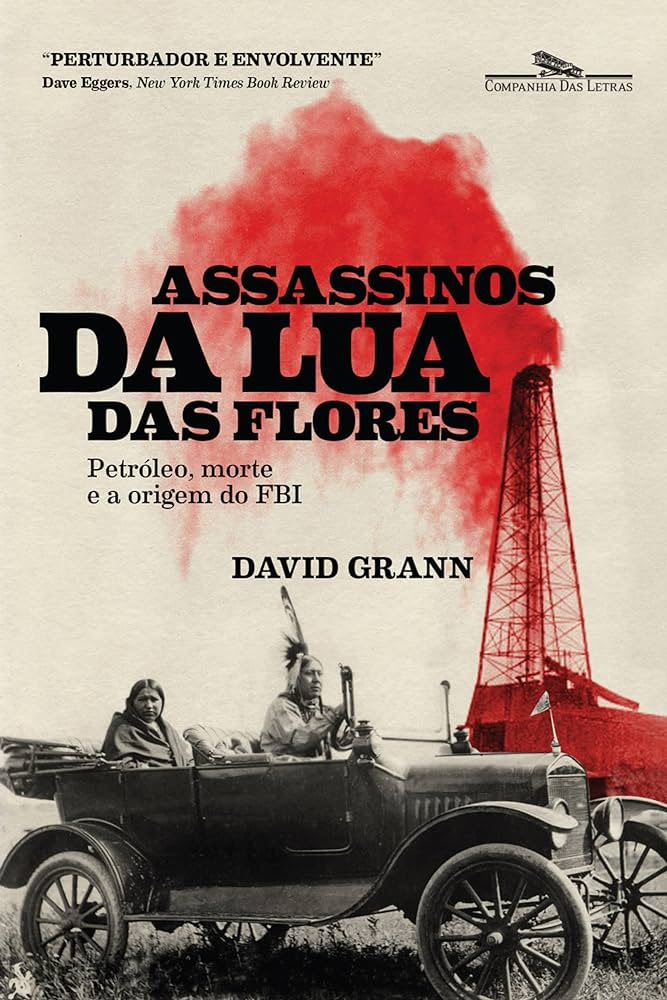

Os assassinatos dados a partir de circunstâncias misteriosas na década de 1920, assolando os membros da tribo Osage, acaba desencadeando uma grande investigação envolvendo o poderoso J. Edgar Hoover, considerado o primeiro diretor do FBI.
A trama foca nos indígenas do povo Osage, que enriqueceu após descobrir petróleo em suas terras. A tribo Osage já foi um dos povos mais ricos do mundo, mas na década de 1920 tudo começou a ruir. É a partir deste ponto que o novo filme de Martin Scorsese mostra o que aconteceu 100 anos atrás.
Após meses trabalhando no caso, White e sua equipe descobriram quem eram os responsáveis pelas mortes: foram William Hale, tio de Mollie e um poderoso fazendeiro da região, junto a Ernest Burkhart, marido dela.
O final de Assassinos da Lua das Flores mostra nenhum dos personagens da narrativa, mas Scorsese como narrador descrevendo como foram os últimos dias de Ernest, Mollie e William em vida. Ele contava os acontecimentos em um teatro, com outras pessoas com instrumentos fazendo a trilha sonora ao vivo.
As indicações do filme foram, melhor filme, melhor atriz, Melhor Direção, Melhor Canção Original, Melhor Trila Sonora Original, Melhor Fotografia, Melhor Montagem, Melhor Ator Coadjuvante, Melhor Figurino e Melhor Design de Produção
 


